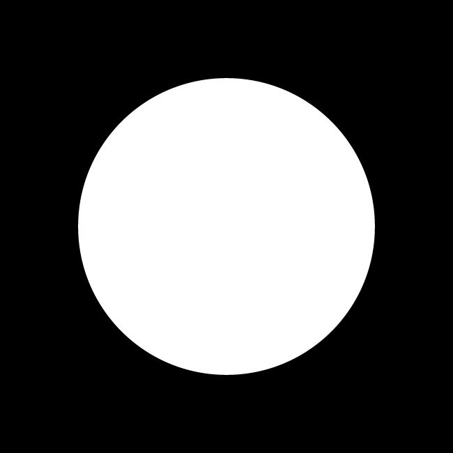
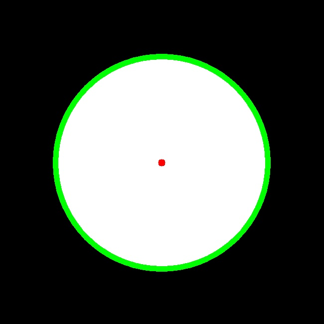

OpenCV also has a function for detecting circles, called HoughCircles. It works in a very similar fashion to HoughLines, but where minLineLength and maxLineGap were the parameters to discard or retain lines, HoughCircles has a minimum distance between circles’ centers, minimum, and maximum radius of the circles.
Here’s the obligatory example:
# Import Necessary library
import cv2
import numpy as np
# Read Input image
planets = cv2.imread('planet.jpg')
# Convert to grayscale
gray_img = cv2.cvtColor(planets, cv2.COLOR_BGR2GRAY)
# Apply median Blur to remove noise
img = cv2.medianBlur( gray_img, 5)
# Convert to grayscale to blurred image
cimg = cv2.cvtColor(img, cv2.COLOR_GRAY2BGR)
# Obtain Hough Circles
circles = cv2.HoughCircles( img, cv2.HOUGH_GRADIENT, 1 ,120,
param1=100, param2=30, minRadius=0, maxRadius=0)
# Convert circles to unit16
circles = np.uint16( np.around(circles))
# Loop though the Circles and draw them
for i in circles[0,:]:
# Draw the outer circle
cv2.circle(planets,(i[0],i[1]),i[2],(0,255,0),10)
# Draw the center of the circle
cv2.circle(planets,(i[0],i[1]),2,(0,0,255),10)
# Save Output Image
cv2.imwrite("HoughCirlces.jpg", planets)
Input Image is:
Output Image for Hough Cirlces will be:
